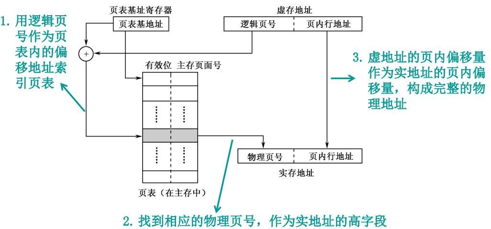

伍少枫的个人主页
Shaofeng's Personal Website
Computer Organization and Design
This part inlcudes important topics in computer organization and design.
Content
This part includes important content in COD. This is a simple outline.
- 计算机系统概论
- 计算机系统概述
- 计算机系统简介
- 计算机的简单分类：专用机(嵌入式)、通用机(包括工作站、...)
- 计算机系统：由软件+硬件构成的复杂的自动化电子设备
- 软、硬件关系：逻辑等价性
- 硬件软化
- 软件硬化
软件固化
- 计算机层次结构
- 计算机系统简介
- ☆计算机基本组成
- 硬件组成
- 五大部件
- 运算器/ALU：
ACC、MQ、X - 存储器：MAR、MDR
- 控制器：PC、IR、CU
- 输入/输出设备
- 运算器/ALU：
- 冯诺依曼结构、哈佛结构、现代计算机结构
- 冯诺依曼结构：运算器为中心的
- 哈佛结构：指令与数据分开存放，并使用独立的总线
- 现代计算机结构：存储器为中心的

- 计算机组成与计算机体系结构
- 计算机体系结构：概念性的机器结构与功能特性
- 计算机组成原理：计算机体系结构的逻辑实现
- 举例：计算机有哪些指令属于计算机体系结构问题，指令如何实现属于计算机组成原理问题
- 五大部件
- 软件组成
- 系统软件
- 应用软件
- 硬件组成
- ☆计算机硬件性能指标
机器字长 - 存储容量相关
存储字长、存储地址位数、存储容量、数据字长 、存储器带宽、字、字节 - 运行速度相关
CPI、MIPS、MFLOPS、IC、f 、TCLK 、CLK 、TCPU 、响应时间、吞吐率、可靠性、可用率- f、CPI、IC反映的问题
- f：制作工艺、硬件实现逻辑
- CPI：硬件实现逻辑、指令集结构
- IC：指令集结构、编译技术
- 注意
- MIPS和MFLOPS计算都使用程序运行的总时间，对于MFLOPS不是只用浮点运算时间
- 当有多种指令，每种指令有自己的CPI时，加权平均计算总的CPI；当指令系统经过修改之后，计算平均CPI时要注意这个时候IC是否变化
- f、CPI、IC反映的问题
- 计算机/CPU发展历史
- 计算机分代
- 计算机设计面临挑战
- 线延迟墙、频率墙、功耗墙等：与制作工艺越来越精密有关
- 存储墙、I/O墙：CPU频率与存储设备、I/O设备不匹配
- 解决的技术
- ☆性能评估方法
- 芯片制作成本
- 芯片制作流程
版图设计 -> 备片 -> 光刻成像 -> 掺杂、金属化、钝化 -> 切割 -> 测试 -> 封装 - 芯片成本 = (NRE+单片集成电路成本*芯片数)/芯片数
注：NRE费用为单次投片费用，芯片销量高，则成本下降- 单片集成电路成本 = (晶片成本 + 晶片测试成本 + 封装成本)/最终成品率
- 晶片成本 = 晶圆成本 / (每块晶圆上晶片数 * 晶片成品率)
- 每块晶圆上晶片数 = 晶圆面积/晶片面积 - π*晶圆直径/(2*晶片面积)0.5
注：即全部的减去边沿上的 - 晶片成品率 = 晶圆成品率*(1+(疵点密度*晶片面积/a))-a
- 每块晶圆上晶片数 = 晶圆面积/晶片面积 - π*晶圆直径/(2*晶片面积)0.5
- 晶片成本 = 晶圆成本 / (每块晶圆上晶片数 * 晶片成品率)
- 单片集成电路成本 = (晶片成本 + 晶片测试成本 + 封装成本)/最终成品率
- 芯片制作流程
- CPU时间计算：TCPU = TCLK*CLK = TCLK*CPI*IC
- Amdahl定律
可改进比例fe、部件加速比Se与总加速比S的关系 -> 只对计算机系统一部分做性能改进，则改进越多效果越小，系统加速比不超过1/(1-fe)
S = 1/(1-fe + (fe/Se))
- 芯片制作成本
- 计算机系统概述
- 指令系统
- 指令系统概述
- 指令系统发展
- 指令与指令系统
- 指令：计算机执行某种操作的命令
- 微指令：微程序级命令，例如取地址、译码，属于硬件
- 宏指令：机器指令集合，属于软件
- 机器指令：通常所说的指令，介于微指令和宏指令之间
- 指令系统：某计算机所有机器指令的集合
- 指令：计算机执行某种操作的命令
- 指令系统发展的兼容性
- 向前兼容和向后兼容：某时期机器编制的程序可以不加修改地运行于早于/晚于它出现的机器
- 向上兼容和向下兼容：某时期机器编制的程序可以不加修改地运行于比它高档/比他低档的机器
- 兼容的方法：
多数指令集是向后兼容的，方法是新的指令系统包含旧机器所有指令
兼容性参考
- 指令系统复杂化与精简
- CISC
- RISC
- 指令与指令系统
- 指令系统性能要求
- 完备性
- 有效性：访存、执行高效
- 规整性
- 兼容性：向上、后兼容
- 编程语言与硬件关系
- 高级语言：与指令集无关，硬件结构对其透明，不能直接访问硬件(C,C++...)
- 低级语言：与指令系统密切相关，需要借助汇编器转化为机器语言以运行(机器只能识别运行机器语言)
- 指令系统发展
- 指令格式
- 指令格式：操作码字段+地址码字段
- 操作码：指明指令要完成的操作
操作码长度：反映机器操作种类数量- 定长操作码
- 设计方法：操作码长度固定，集中在某一字段
- 优点：便于硬件设计，便于译码
- 变长操作码/扩展操作码
- 设计方法：操作码长度随指令中地址数变化
- 优点：有利于压缩操作码长度
- 设计原则：使用频率高的指令应安排在操作码短的指令，有利于译码
- 注意事项：
短操作码可能会占用长操作码的前几位，导致可用的长操作码减少（防止混淆）
- 定长操作码
- 地址码：指明源操作数地址、结果地址、下一条指令地址
- 零地址指令
- 一地址指令
- 二地址指令
- 三地址指令
- 操作码：指明指令要完成的操作
- 指令字长
- 概念：指令中二进制位位数
- 按与机器字长关系分
- 单字长指令
- 半字长指令
- 双/多字长指令：为了增加地址位，但是CPU需要多次访存
- 按指令字长本身是否可变
- 等长指令结构
- 变长指令结构：例如有普通指令和压缩指令
- 指令助记符
用字母表示指令，可以认为是汇编代码，利用汇编器从助记符到二进制操作码
- 指令格式：操作码字段+地址码字段
- 操作数与操作类型
- 操作数类型：地址、数值、字符、逻辑数据等
- 数据在存储器内存放方式
- 基本存储单元：字节
- 访问方式：按字节访问、按字访问、按半字访问、按双字访问
- 边界对齐
- 问题：某多字节数据存储时，如何选择存放区域？
- 对齐方式：原则是保证该数据之前和之后的地址空间都能正好完整存放同一长度的数据即可(例子如下图)，另外如果不满字节、半字、字、双字，那么要填充空白字节
- 意义：确保CPU访存速度
- 字节顺序
- 问题：多字节数据按字节存储，各字节顺序如何？
- 存放方式：大/小尾端 -> 低位字节在高/低地址，尾即指低位字节(0x0123例子如下图)
- 操作类型
- 数据传送操作：LOAD,STORE,MOVE,PUSH,POP...
- 算数逻辑操作
- 移位操作：可代替简单的乘除法
- 转移跳转操作
- 无条件跳转
- 条件转移
- 过程调用与返回：调用者保存、被调用者保存
- 陷阱：中断，可能是CPU隐含指令，在意外发生时执行；也有提供给用户使用的，用于完成系统调用等
- 输入输出操作：适用于I/O独立编址机器
- 其他指令：停机、NOP等
- 寻址方式
- 指令/数据寻址关系
冯诺依曼结构两者交替(数据和指令放在一起)，哈佛结构可同时 - 指令寻址
- 顺序寻址：PC+1
- 跳跃寻址：转移类指令执行
- 数据寻址
- 基本概念
- 形式地址A：指令地址码字段所表示地址，通常不是真实地址
- 有效地址EA：相对于形式地址，是真实地址
- 寻址特征：指示寻址方式
- 数据寻址：由形式地址，通过寻址特征变换成有效地址
- 寻址方式
注意，其中偏移寻址分为三种- 相对寻址：EA = A + (PC) -> 程序时间空间局部性以及程序相对位置与绝对位置无关
- 基址寻址：
- 方法：寄存器中含有一个主存地址，指令中的形式地址A表示相对于该地址的偏移量
- 特点：基址寄存器的内容通常由操作系统或管理程序确定，在程序执行过程中不可变，可变的是形式地址A
- 用途：扩大基址寄存器位数从而扩大寻址范围、为程序透明地分配空间、实现段寻址
- 变址寻址
- 方法：指令中的形式地址A表示一个主存地址，寄存器中含有相对于该地址的偏移量
- 特点：变址寄存器的内容由用户设定，在程序执行过程中可变，但形式地址A的内容是不可变的
- 用途：数字操作、循环等
- 寻址方式研究意义：硬件和指令系统设计、汇编程序效率的提高...
- 基本概念
- 指令/数据寻址关系
- CISC和RISC
- CISC与RISC对比
- 参考
其他的一些对比对比项 CISC RISC 全称 Complicated Instruction Set Computer Reduced Instruction Set Computer 采用的技术 扩展操作码、变长指令、多种寻址方式 流水线、超标量 寄存器数量 少 多 缺点 指令集庞大，设计新一代指令考虑兼容不方便；硬件设备复杂，处理器设计周期长；大部分指令只有很少的时候会用到 汇编程序编写复杂，完成特殊功能比较慢 出现原因 早期计算机主频低，元件昂贵，运算慢 集成电路技术发展，并且简单指令实际上占程序的大部分 - 指令系统设计与举例
- MIPS
- x86(CISC)
- RISC-V

- 指令系统概述
- RISC-V处理器设计
- 单周期CPU
单周期CPU本质上是有限状态机
注：图中未添加jal相关数据通路，其数据通路添加PC+4到寄存器写数据以及Jump到PCSrc控制
典型问题- 时钟周期(机器周期) = 指令周期
- 时钟周期确定/关键路径确定/主频计算
- 多周期CPU
- 多周期含义：定长机器周期，不定长指令周期，部件复用，中间结果保存
- 多周期各周期任务
取指->译码->执行->访存->写回 - 多周期数据通路(MIPS)
注意，由于MIPS的J型指令是通过PC高四位加指令中26位地址左移2位(每条指令4byte，而RISC-V有压缩指令，所以左移1位)得到的，而RISC-V的UJ型指令是通过PC+offset-left-shift得到的，因此RISC-V的无条件跳转指令应该在ID计算目标地址，在EX将ALUOut给PC - 多周期有限状态机(MIPS)
- 流水线CPU
- 流水线性能评价：吞吐率、实际吞吐率(任务量/实际运行时间)、最大吞吐率(流水线稳定状态吞吐率)、加速比、最大加速比、效率
- 吞吐率
- 最大吞吐率：TPmax = 1/t0，t0即流水线各段时间，假设相等
- 实际吞吐率：
T流水 = mt0+(n-1)t0
TP = n/T流水 - 各段时间不等时，最大吞吐率取决于最长流水段(瓶颈段)，实际吞吐率为第一个任务所用总时间加(n-1)tmax，因为后续任务在瓶颈段等待
- 加速比
- 最大加速比：m，即流水段数
- 实际加速比：nmt0/T流水
- 效率
E = 实际加速比/最大加速比 = nt0/T流水 = 面积比 = TPt0，填充时间、流水段不均匀导致效率下降，提高效率也会提高吞吐率
- 吞吐率
- 五段流水RISC-V CPU的基本结构
- 结构冒险
- 哈佛结构(数据和指令内存分离)
- 寄存器堆写优先
- 瓶颈段
虽然没有真正的结构冒险，但是会破坏流水段均匀性 -> 细分瓶颈/并行重复瓶颈段
- 数据冒险
- 分类：写后读(RAW)、写后写(WAW)、读后写(WAR)
谁会出现？写后读 谁不会？写后写，读后写 - 数据前递/forwarding
- 前递路径
从 MEM,WB 前递到 EX，还有别的么？- 可能有 MEM,WB 前递到 ID (分支提前)
- 可能有 WB 前递到 MEM (lw-sw且rd和rs2冲突)
- 判断逻辑？
目标寄存器==要用的寄存器并且该段RegWrite有效
- 前递路径
- 一般的数据冒险
由数据前递解决 -> forward unit判断数据冒险，前递MEM和WB段数据(两者同时冒险那么MEM优先) - load-use数据冒险
发生在：load在EX段，use指令在ID段，那么将IF,ID段冻结一个周期(流水线互锁) -> 锁定PC和IF/ID.regs，清除ID/EX.regs -> 然后由前递处理
load-use包括？- load-R：例如lw rd,offset(rs1) -> add rd,rs1,rs2
- load-I：例如lw rd,offset(rs1) -> add rd,rs1,imm
- lw-sw？？？
lw x1,offset(x2) -> sw x3,offset(x1) ？ 实际上是load-I，是load-use，要停顿流水线
lw x1,offset(x2) -> sw x1,offset(x3) ？ 可以是，也可以不是。认为是那么就是load-R,rs2冲突；认为不是，sw最晚MEM段才用，可以用数据前递解决，不用停顿流水线，不是真正意义上的load-use
- 分类：写后读(RAW)、写后写(WAW)、读后写(WAR)
- 控制冒险
- 分支提前(降低分支的延迟)
分支提前到IF -> 新的数据相关，额外的前递 - 延迟分支(编译调度)
- 从前调度：被调度指令与分支结果无关
- 从目标处调度：被调度指令与分支结果无关，并且不会在分支失败时导致顺序执行调度指令、失败处指令发生错误
- 从失败处调度：被调度指令与分支结果无关，并且不会在分支成功时导致顺序执行调度指令、成功处指令发生错误
- 分支预测
- 静态分支预测：投机执行
- 总是预测分支失败
- 总是预测分支成功
- 向后(指PC小方向)分支预测成功，向前分支预测失败(适合嵌套循环)
- 动态分支预测
- 一位动态预测：根据上次结果预测这次结果，预测失败立刻修改分支结果
- 两位缓冲动态预测：两次预测失败才修改分支预测结果
- 静态分支预测：投机执行
- 分支提前(降低分支的延迟)
- 流水线多发技术
目标：简单标量流水线，通过减少流水线停顿 -> IPC=1(CPI=1) 多发技术 -> IPC>1- 超标量技术
- 实现：多个寄存器端口、指令译码电路、总线、功能部件，并行发射和执行多条不相关指令。指令并行化需要由编译器决定。
- 注意事项：不能改变指令逻辑顺序
- 超流水线/深度流水线
- 实现：细分流水段，一个周期内流水段被多次使用。优化由编译器完成。
- 注意事项：不能改变指令逻辑顺序
- 超长指令字
- 实现：并行方法与超标量类似，但是超标量指令来自标准值指令流，超长指令字在编译时发掘指令并行性，然后组合指令成为超长指令，指挥多个功能部件运行。
- 注意事项：对编译器、Cache容量要求更高
- 超标量技术

- 流水线性能评价：吞吐率、实际吞吐率(任务量/实际运行时间)、最大吞吐率(流水线稳定状态吞吐率)、加速比、最大加速比、效率
- 三种CPU实现的对比
- 单周期CPU
- 中断
- 中断的基本概念
- 中断：暂停当前程序执行，转而执行其他程序，执行完成后恢复被中断程序执行
- 中断的作用
- 异常
- I/O
- 并发
- 服务：用户与OS交互，trap
- 中断管理：ISR->中断服务程序
- 中断发生时机
- I/O中断：随时发生，延迟处理
- 异常：随时发生，随时处理
- 陷阱：专用指令，特殊处理
- 引起中断的因素
- 人为因素：例如转管指令、trap等
- 程序异常：溢出、非法指令
- 硬件故障
- I/O设备发起的中断请求
- 外部事件，例如用键盘中断现行程序
- 中断要解决的7个问题
- 各中断源如何向CPU提出请求：中断请求标记触发器INTR
通过对INTR置位向CPU提出中断请求
分布位置- 分布在各中断源接口电路
- 集中在CPU中断机构内，即由CPU连接到各外设
- 各中断源同时提出请求怎么响应，即中断判优逻辑
- 硬件排队：原理为高优先级请求封锁低优先级请求
- 分散在各中断源接口电路链式排队器
- 集中在CPU内链式排队器
- 软件实现(程序查询)
例如可以先查优先级较高的是否掉电 - 硬件排队：原理为高优先级请求封锁低优先级请求
- CPU什么条件、时间、方式响应中断
- 响应条件：
- CPU允许中断：EINT，允许中断触发器
- 中断请求：INTR=1
- 其他：主要是以上两项，其他例如I/O设备是否准备好(D)、中断是否被屏蔽MASK等
- 响应时间：指令执行周期结束，CPU发出查询信号
- 响应方式：
中断隐指令在中断周期完成操作，包括： - 保存断点：主要是将PC和PSW入栈或存入特殊位置
- 寻找ISR入口
- 硬件向量法：向量地址->PC
- 软件查询法：中断识别程序地址入口 -> PC
- 硬件关中断：S-R触发器自动EINT=0,INTR=1 -> 为了防止保护现场被打断，与是否允许多重中断无关
- 响应条件：
- 如何保护现场，如何恢复现场，如何返回
- 保护现场：在ISR开头各寄存器内容入栈(断点、PSW由隐指令完成)
- 恢复现场：在ISR结尾各寄存器内容出栈
- 返回：在ISR最后，用一条中断返回指令返回
- 如何寻找入口地址
- 硬件向量法：
- step1.向量地址产生
- 设备编码器：分布在各设备接口
- 集中在CPU的向量地址形成部件
- step2.转向ISR
- 无条件跳转：向量地址->PC，向量地址存放的是一条无条件跳转指令，直接跳到ISR
- 向量地址表：向量地址存放ISR入口地址而不是指令，处理程序负责用这个地址跳到ISR
- step1.向量地址产生
- 软件查询法
由程序员安排跳转指令，并指定跳转地址
- 处理中断过程中又出现中断怎么办？ -> 多重中断
- 单重中断：CPU执行ISR时不允许新的中断
- 多重中断/中断嵌套：
- 概念：CPU执行ISR时允许响应新的中断
如下图，每发生一次中断嵌套，断点都会入栈以保证能正常返回被打断的ISR - 多重中断条件
- 提前开中断
中断隐指令通过硬件自动关中断，需要开中断指令将EINT置1 - 优先级
优先级高中断源有权中断中断优先级(这里指处理优先级还是响应优先级要看是否使用了屏蔽字的技术，没有的话两者是相同的)低的中断源
注：下图不包含屏蔽字相关设定
- 提前开中断
- 屏蔽技术
- 屏蔽触发器和屏蔽字：动态优先级设定
- 接口电路内屏蔽字应用
屏蔽字为1即使D为1，INTR只能为0，无法发出中断请求 - 集中在CPU内的链式排队电路
屏蔽字为1导致INTP恒为0，中断请求被屏蔽
- 接口电路内屏蔽字应用
- 屏蔽字的设定：ISR内设定
如下图，与普通的多重中断示意图相比，保护现场后保存当前屏蔽字并设定新屏蔽字，恢复现场现在不允许打断，恢复后恢复屏蔽字再开中断。即修改屏蔽字的时候要避免中断。 - 屏蔽技术改变优先级
- 响应优先级：由硬件排队电路固定，无法改变
- 处理优先级：
可通过设置屏蔽字改变，从而使得某中断虽然先响应，但执行ISR时被其他高处理优先级中断打断，这个时候实质上是因为屏蔽字修改了响应优先级，其他中断可以响应，从而才表现为可以执行ISR
例子

- 屏蔽技术用途：人为屏蔽某个中断源，便于程序控制

- 屏蔽触发器和屏蔽字：动态优先级设定
- 概念：CPU执行ISR时允许响应新的中断
- 各中断源如何向CPU提出请求：中断请求标记触发器INTR
- 中断在多周期和流水线中的实现
- 异常处理工作
- 将断点保存在EPC(PC-4)
- 根据Cause状态寄存器内异常原因处理异常
- 跳转到异常处理程序(PC)
- 多周期
- 中断和异常操作特点(非流水线)
- 顺序语义：之前的指令全部执行完，之后的指令还没有执行
- 断点精确：指令异常同步响应，外部中断异步响应(在下一条指令fetch前)
- 现场简明：EPC和Cause
- 多周期异常处理状态机
注意：下图以溢出、非法指令为例，其中溢出可以提前到前一个阶段后执行；其他的中断、异常可以用类似的方法加入状态，例如对于I/O中断可以放在下一条指令fetch前检查 - 多周期异常处理RTL
以算数溢出为例，溢出可以在修改算数指令MEM段，改为给PC、EPC、Cause分别赋值处理程序地址、断点地址PC-4(利用ALU算出)、对应的Cause编码；当然也可以修改WB段，错误值写回也无所谓
其他的中断、溢出以此类推，和状态机对应即可 - 多周期异常处理数据通路
- 中断和异常操作特点(非流水线)
- 流水线
- 非精确处理
判断异常，保存现场，清空指令，跳转执行(在同一个posedge clk完成)- 方案一
- 实现：无论哪一段发生异常，不允许后续指令进入流水线，允许已进入流水线指令执行完
- 特点
- 非精确：断点可能不是异常指令，而是最后进入流水线那条指令
- 可变：不同段发生异常，得到的EPC相对异常指令增量不同
- 方案二
- 实现：将异常指令后续指令排空，异常指令之前的指令正常执行 -> 是一种控制相关
- 清除异常指令后的全部指令(flush)
- 记录异常原因(Cause)
- 保存异常指令断点(EPC)
- 转到异常服务程序运行(由异常原因决定，例如RISC-V中使用向量表基址加异常向量地址)
- 数据通路(RISC-V)
说明：add在clock6发生溢出，进入clock7的时候，寄存器清空、EPC写入、cause写入、PC更新为处理程序第一条指令地址；先于add的指令不受影响地执行
注意：图中没有画出MEM/WB段flush信号，此信号用于处理访存错误等发生在MEM段的错误；并且CAUSE和EPC的输入不仅仅来自EX，其他流水段也有输入，因为异常可能发生在任何一个流水段，不要误解图中所示。
- 实现：将异常指令后续指令排空，异常指令之前的指令正常执行 -> 是一种控制相关
- 缺点：
- 异常响应时间长
- 后续指令如果被允许执行可能又会引发错误
- 程序调试不能按要求停在设置好的断点处
- 多个异常并发难以处理
- 方案一
- 精确处理：判断异常，暂存错误，到点提交，保存现场，清空指令，跳转执行
- 实现：
- 保持异常标记直到提交点(MEM段)
- 提交点如果有异常，那么更新cause、EPC、PC，并清除所有流水段
- 执行完成ISR，返回断点继续执行
- 本质：使用后援大量寄存器，安全(指严格按照指令逻辑先后关系处理异常，并把流水线状态完整保存)停止流水线，从而可重启
- 特点
- 早期流水段异常抑制后来的异常
两层含义：- 同一指令处理较早的异常：因为后面的异常可能是早期异常造成的
- 不同指令处理深度最深指令异常：下面图中硬件实现避免了后面指令前面流水段在时间上更早发生异常从而导致对其进行异常处理，无视了逻辑上前面指令的异常(尽管发生在靠后流水段)；提交点异常将后续指令全部flush，抑制后续异常
- 保证前面指令完成：提交点在MEM，这保证前面的指令WB执行完，必然完成，并且后续指令全部被flush
- 早期流水段异常抑制后来的异常
- MIPS提交点实现数据通路
- 实现：
- 非精确处理
- 异常处理工作
- 中断的基本概念
- 存储系统
- 存储器分类
- 按材料分：半导体、磁表面、光盘
- 按存取方式：随机存取、只读、串行访问
- 按作用：主存、辅存、缓存
- 存储器层次结构
存储空间、运行速度、成本之间的权衡

- 主存储器
- 指标
存储容量、存储字长、存取时间(访问时间)、存取周期(大于存取时间)、存储器带宽 - 半导体存储芯片
- 基本结构
- 存储矩阵：具有记忆功能
- 译码驱动电路：翻译地址信号为对应单元的选择信号
- 读写电路：读放大电路、写电路
- 相关总线：数据线、地址线、控制线(读写控制线、片选线)
- 译码驱动方式
- 线选法
- 重合法
- 基本结构
- RAM
- SRAM：易失性存储，不掉电维持
- 时序
- DRAM：电容信息维持1-2ms
- 时序
- 刷新：将原信息读出再按行写入
- 分散刷新：刷新插入存取周期，存取周期会变长
- 集中刷新：在刷新周期进行刷新，形成死区
- 对比
- SRAM：易失性存储，不掉电维持
- ROM：一次性编程，可以存放系统代码
- 存储器与CPU连接
- 扩展要求
- 位扩展：
地址线、控制线公用，数据线分开 - 字扩展：
地址线、数据线、读写控制线公用，片选线独立来自地址高位(不参与片内寻址)
- 位扩展：
- 存储器元件选择：
- RAM：用户程序/数据区，系统工作区
- ROM：系统程序区
另外还要注意数据位宽，是否需要位拓展 - 译码电路和片选信号
- 74138译码器等译码器
使用高位地址位、MREQ访存控制信号或者恒电压信号驱动译码器控制端 - 地址范围要求：开始地址、最低、最高、连续....
越界的避免？ -> 片选信号结合地址某高位一起组成片选 - 片选信号：译码器输出以及地址某高位一起组成片选，选择芯片同时对于某些无效的地址段防止越界(ppt例题1)
- 74138译码器等译码器
- 扩展要求
- 访存速度提高策略
由最初的单体单字到...- 双端口存储器：两套独立端口
- 单体多字：存储字长大于机器字长，每次总线从存储器取得的数据是若干倍的机器字
- 多体并行
- 高位交叉：地址连续的数据放在同一存储体内

连续读取n个字时间：nT - 低位交叉：地址连续的数据依次循环放入不同存储体内

连续读取n个字时间：T+(n-1)t，t为完美流水工作情况下启动间隔或者也可以说是总线使用时间，非完美流水(T>nt)要另外考虑
两者并行访问模式的区别：前者多任务、多处理器访问不同存储体，例如两个存储题一个运行、一个IO；后者并行访问多个字，提高带宽 - 高位交叉：地址连续的数据放在同一存储体内

- 容错和校验
- 码距L、检测D位错、纠正C位错
- 只检错：L >= D+1
- 只纠错：L >= 2C+1
- 检错和纠错：L >= D+C+1
- 奇偶校验
- CRC循环冗余校验：(n+k,n)码
k >= D+C+1 - 海明码
- 码距L、检测D位错、纠正C位错
- 指标
- ☆高速缓冲存储器Cache
- 为什么需要Cache
- 解决CPU运算速度和访存速度不匹配的局面
- 解决CPU和IO访存冲突，让CPU在冲突时访问Cache
- 原理：程序的局部性
- 组成：SRAM，片上的纯硬件实现，对用户透明
- 体系分类
- 单一Cache和多级Cache
- 统一Cache和分离Cache
- 指标
块长、总容量、命中率、平均访问时间、访问效率 - 工作流程
地址映射、Cache命中、Cache替换
- Cache映射策略
- 全相联映射
映射到任意块，将标记(地址块号)和内容一起写入，查找时利用比较器同时比较全部标记
Address = Tag + offset
Cache单元：valid + Tag + data

- 直接映射
属于一个同余类的主存块映射到同一Cache块，将标记(地址块号)和内容一起写入，利用主存块号计算Cache块，将标记进行一次比较
Address = Tag + index + offset，行号=index mod 行数
Cache单元：valid + Tag + data （此时各行隐含index）
- 组相联映射
组间直接映射，组内全相联映射，组内有v块称为v路组相联
Address = Tag + index + offset，组号=index mod 组数
Cache单元：valid + 组号 + Tag + data
- 全相联映射
- Cache替换策略
- FIFO
- 随机
- LFU/least-frequently used
- LRU/least-recently used
- Cache读写策略
- 读Cache流程(即Cache工作流程)

- 写命中时写策略
- 写直达法：写入Cache和主存
- 写回法：只写入Cache，块被调换时写入主存
- 写失效时写策略
- 按写分配(写时取)：先把块调入Cache，再执行写命中写Cache
- 不按写分配(绕写法)：不把块调入Cache，直接写入下一级存储器
- 读Cache流程(即Cache工作流程)
- 为什么需要Cache
- ☆虚拟存储器
- 虚地址到实地址：程序重定向
逻辑地址空间可以远大于实地址空间 -> 用户编程时可以认为自己的程序运行的进程拥有很大的内存
逻辑地址空间可以远大于实地址空间 -> 多个用户，限制单个任务的地址空间，并且逻辑地址位数小让页表/段表更小 - 虚存与Cache
内存 = 主存 + Cache ， 虚存 = 主存 + 辅存- 不同：侧重点、与CPU数据通路、透明性、未命中代价
- 相同点：利用程序局部性，同时拥有近似高速存储器的速度和低速存储器的容量（如果命中率高）
- 虚存实现
- 页式虚存
- 页表：进程特定
逻辑地址 = 逻辑页面号 + 页内偏移
页表entry = valid + 虚拟页号 + 权限 + 物理页号
地址映射：(页表基址+逻辑页面号->物理页面号->物理页面起始地址) + 页内偏移->物理地址 ， 最多两次访存 - 多级页表
- 反向页表：用于物理页少于逻辑页的情况（一般情况各进程逻辑页小于总物理页数量）
- TLB/Translation Look-aside Buffer

- 段式虚存
- 段表：程序特定
逻辑地址 = 逻辑段号 + 段内偏移
段表entry = valid + 段物理起始地址 + 段长
地址映射：(段表基址+逻辑段号->物理段起始地址) + 段内偏移->物理地址 ， 最多两次访存 - 段页式虚存
- 段表+页表：可重入段是程序特定的，局部变量等在执行时copy到各进程的局部数据段
逻辑地址 = 逻辑段号 + 逻辑页号 + 页内偏移
段表entry = valid + 页表起始地址 + 段长，页表entry = valid + 虚拟页号 + 权限 + 物理页号
地址映射：((段表基址+逻辑段号->页表起始地址) + 逻辑页号) + 页内偏移->物理地址 ， 最多三次访存
段页式存储参考
三种虚存示意图实现对比
页表

段表

段页式
注：如果只有一个段表基址寄存器，且在切换程序时更新，那么基号可以省略
- 虚存替换
虚存未命中开销远大于Cache未命中- FIFO
- LRU
- LFU
- 虚地址到实地址：程序重定向
- 辅助存储器
- 存储器分类
- 总线
- 总线概述
- 总线概念
- 计算机系统的互连结构，在资源争用的基础上实现计算机各部件地址、数据、控制信息的交换。一般而言，总线由多条传输线和数据通路组成，每条线可以传输一位二进制代码。
- 注意：争用意味着每一时刻只能有一个部件向总线发送信息，但是可以有多个部件从总线接收信息
- 总线分类
- 数据传送方式：并行/串行总线
- 数据与时钟同步/异步工作：同步/异步总线
- 连接部件：
内部 /系统总线
系统总线分类- 数据总线：双向
- 地址总线：单向
- 控制总线：单向
- 总线特性：物理/电气/功能/时间(时序)特性
- 总线性能指标
- 总线宽度
- 总线频率：1/传输一次数据时间(总线周期)
- 总线周期/总线时钟周期
- 总线带宽：通常用每秒字节数衡量
- 其他：总线复用、负载能力...
- 总线标准
- 总线标准：系统、模块之间互连的标准规范(协议)，模块可以不知对方连接要求，只考虑自身的接口功能要求
- 一些总线标准：ISA,EISA,PCI,USB,AGP...
- PCI
- 时钟：独立于CPU时钟
- 突发工作模式/burst mode：连续传输数据只需给出首地址和burst时间，不用得到一个地址再传一个数据
- 总线概念
- 总线结构
- 外部结构
- 单总线结构
- 连接在总线上部件要高速完成操作，迅速放弃总线控制权
- 发送到主存地址也发送到其他I/O设备，对I/O设备操作与主存相同，可以指定地址
- 多总线结构：按速率不同分类
- 单总线结构
- 内部结构
- 早期总线内部结构：处理器芯片的引脚延伸，处理器与I/O适配器的通道，与CPU结构密切相关，通用性差
- 现行总线内部结构：把CPU、存储器等都视为总线的设备，总线是标准的，与CPU等无关
注：CPU和Cache作为一个整体和总线相连- 数据传输总线：数据、地址、控制
- 仲裁总线：总线请求和总线授权
- 中断和同步总线：中断请求和中断响应
- 公用线：时钟、电源...
- 外部结构
- 总线仲裁
- 基本概念
- 设备主从关系
一个主动方占用总线(总线占用期)，一个或多个被动方响应主动方，此时总线忙 - 总线仲裁：对多个设备提出的总线占用请求判优。可根据仲裁电路位置来分类
- 设备主从关系
- 集中式仲裁：现代总线的一般做法
- 基本方式：CPU中总线仲裁器负责仲裁,每个设备模块的BR(请求)和BG(授权)连接到仲裁器
- 三种仲裁方式
此处参考图也可见ppt参考图，更详细
- 分布式仲裁：无中央仲裁器
- 自举分布式仲裁：仲裁期间取回请求线上信号，各自独立的决定自己是否是优先级最高的（优先级固定）
- 冲突检测分布式仲裁：监听总线，发生冲突则用某种方式选择一个使用者(CSMA/CD)
- 并行竞争分布式仲裁：各设备有自己专属的仲裁号和仲裁器（优先级固定）
- 具体原理：
- 各设备若请求总线则将自己的仲裁号发到仲裁总线上，总线的每一根对应一位，只要有设备发送了仲裁号并且仲裁号此位是1，那么该线上为低电平(表示这一位有1)
- 若仲裁总线为1(低电平)而仲裁号为0，那么低于该位的所有位仲裁号变为0，高电平被写入总线，表示该仲裁号更小，其不影响更大仲裁号修改仲裁总线
若仲裁总线为1(低电平)而仲裁号为1，不影响低位
若仲裁总线为0(高电平)，不管仲裁号为多少，不影响低位
即最终结果只有当仲裁总线表示的值大于仲裁号该位时，其低位相当于被置0，从而不影响更大仲裁号修改总线 - 最终仲裁线上仲裁号与具有最大仲裁号的设备仲裁号匹配，获得总线控制权
- 帮助理解的例子
- 具体原理：
对比项 链式查询 计数定时 独立请求 实现方式 类似于排队电路，按连接顺序查询，一旦查询到BR有请求，则不继续往下查询，建立总线忙BS信号 设备通过BR发出请求，仲裁器计数并将计数值通过设备地址线发给各设备，设备地址和计数值相同的设备置总线忙信号BS 每个设备都有自己的BR和BG，仲裁器内部的排队电路根据一定优先次序决定先响应哪个请求 优先级 离仲裁器最近的设备优先级最高 计数从0开始：优先级固定
计数从中止值开始：优先级相等nice 优点 硬件连线简单且容易扩充 优先级可变
对电路故障不敏感优先级灵活，响应时间快 缺点 对电路故障敏感
优先级是固定的；优先级低设备很难获得的请求控制线增加，控制复杂 控制线更多，控制更复杂 - 基本概念
- 总线通信
- 总线操作
- 读操作：地址 -> 命令 -> 数据
- 写操作：地址 -> 数据 -> 命令
- 块传送/猝发式操作(burst)：给出起始地址和burst时间，然后连续写入/读出，不需要重复传地址
- 先读后写/先写后读：只给出一次地址
注：先读后写用于共享资源保护，先写后读用于校验 - 广播/广集：一主对多从的写和读
广集需要指定数据在总线上进行与或操作，可用于多个中断源检测
- 总线周期：完成一次总线操作的时间
- 申请分配：主设备提出申请，仲裁决定下一周期总线归属权
- 寻址阶段：主设备发送设备地址、命令等，启动从设备
- 传送阶段：主、从设备数据交换
- 结束阶段：主设备相关信息从总线上撤出，让出使用权
- 串行/并行传送、复用
- 串行传送：单线脉冲传送，每一位平均用的时间 -> 位时间
- 并行传送：多线电位传送
- 复用：分时复用总线，既传地址又传数据
- 总线通信方式

对比项 同步 异步 半同步 分离式 实现方式 通信双方用统一时钟控制 通信双方一次、两次、三次握手(不互锁、半互锁、全互锁)，需加入两条应答线 同步结合异步，统一时钟控制，从模块利用等待线通知住模块自己没有准备好，主模块插入等待周期以平衡速度 总线周期分为两个子周期，子周期内单向同步通信，例如第一个子周期发送地址、命令、主模块编号，第二个子周期反向发送数据和模块编号
两个子周期开始时申请总线控制权，两个子周期之间总线归还控制权总线周期 主设备发出地址和读写命令开始，直到数据传输完成，归还总线 同上 同上 分为两个子周期 优点 模块配合简单 允许各部件速度不同 控制方式比异步简单，统一时钟更可靠 准备数据时不占用总线，因此占用期间都在进行有效工作而不等待浪费 缺点 强制同步，必须在限定时间内完成操作
需按最慢的部件设计公共时钟有附加位存在，比特率小于同步 等待周期数量不确定 控制复杂 使用体系 总线短，各部件存取时间近似 各种体系 各部件速度差异大的简单系统 大型计算机 常见相关问题 同步读、写的控制、数据、地址信号 比特率 与波特率 计算半同步读、写的控制、数据、地址、等待信号 子周期主从关系(都是主设备，当然也都是从设备，都能申请总线控制权)、数据流方向 - 附：常见问题示意图
同步总线读写
半同步总线读
- 总线操作
- 总线概述
- I/O
- I/O系统概述
- I/O系统组成
- I/O软件
- I/O指令：接口模块方式常用，是指令集中的指令，操作码(区分与其他机器指令)+命令码(体现具体操作)+设备码(指明设备)
- 通道指令：具有通道系统的I/O系统常用，不是指令集中的指令，由通道执行。
注：CPU执行I/O指令启动设备、查询通道情况后，由通道指令接管I/O设备
- I/O硬件
- 带接口I/O系统：I/O设备，接口模块电路
- 带有通道系统的I/O系统：通道连接一到多个设备控制器，设备控制器连接一到多个同类型设备

- I/O软件
- I/O系统发展阶段
- 早期阶段
- 接口模块
- DMA
- 通道结构
- I/O处理机(外围处理机)
- I/O系统与主机联系
- 编址方式
- 统一编址：I/O指令和访存指令类似，占用主存空间
- 独立编址：I/O指令专门设置，不占用主存空间
- 传送方式：并行/串行
- 联络方式
- 立即响应：缓慢I/O设备已经在等待CPU
- 同步
- 异步应答:握手
- 编址方式
对比项 早期阶段 接口模块 DMA 通道结构 I/O处理机 实现方式 每个I/O设备以一套独立逻辑电路和CPU相连 I/O设备通过接口模块以及总线和主机相连，接口中设有数据通路和控制通路 I/O设备通过DMA与主存直接相连 通道作为CPU的从处理器，依据CPU指令进行启动、停止、改变工作状态，通过通道指令独立进行I/O和主存之间信息交换 外围处理机 工作特点 CPU和I/O设备串行工作 可用中断方式工作 DMA代替CPU管理I/O，但需要窃取周期占用总线 通道可以独立执行通道指令编写的输入输出程序，但也不是完全独立于CPU的 基本独立于CPU，完成通道完成的I/O控制，还要完成码制变换、纠错等 缺点 复杂，浪费CPU资源，难以扩展 交换信息时仍然要占用CPU资源，并非绝对并行 DMA接口多则控制困难，成本高，并且会频繁窃取CPU周期 略 略 - I/O系统组成
- I/O接口
- 基本概念：I/O接口也叫适配器，是主机与I/O设备之间的硬件电路和软件控制
注意：端口指接口电路中的寄存器，CPU对I/O设备的操作实际上是对端口的操作 - I/O接口功能和组成
- 选址
- 数据缓冲，数据串并转换
- 传送控制命令
- 反映I/O设备状态：中断请求触发器INTR、中断屏蔽触发器MASK(如果INTR和MASK是分布在接口内的，并且采用程序中断的I/O方式)、完成触发器D、工作触发器B
- I/O接口分类

- 基本概念：I/O接口也叫适配器，是主机与I/O设备之间的硬件电路和软件控制
- I/O信息交换方式
- 程序查询方式
- 基本实现：数据在CPU和外围设备之间的传送完全靠计算机程序控制，CPU暂停主程序，主动通过I/O指令查询并转去执行I/O服务程序
- 示意图：多个I/O设备程序查询以及单个I/O设备的服务程序流程
注：多个设备按优先级降序循环查询，进入某设备服务例程中仍采取轮询的方式，每个字节都进行相同的忙等操作(CPU控制)，因此会浪费CPU资源 - 实例
可以结合这里理解总线读操作、写操作的时序，例如为什么读操作给出地址、命令之后，需要等待几个周期才能读取数据，因为这个时候设备正在准备数据（对于同步通信和半同步通信而言，分离式可以认为没有等待）

- 程序中断方式
- 基本实现：CPU给出启动I/O设备命令后，I/O设备与控制器自行准备数据，准备好后以中断的方式提示CPU，此时CPU暂停当前程序转入I/O服务程序
- 示意图：CPU正常执行程序，I/O通过中断占用CPU
注：整个过程符合中断那一章描述的过程，包括中断允许、中断请求、中断判优、保护现场、跳转ISR、是否允许多重中断以及屏蔽字的设置 - 实例
设备在图中1、2、3、4处准备数据，此时CPU并行完成自己的任务，当5处一条指令执行结束，CPU查询到有中断时，转而执行ISR
- DMA方式
- 基本实现：DMA控制器从CPU获取基本I/O信息(主存位置、计数、命令等)并申请总线控制权后，完全接管总线，直接和主存进行数据交换，不经过CPU
- 三种实现：
- 实例：DMA接口和DMA过程
- DMA接口以及各寄存器作用：主存地址寄存器AR、字计数寄存器WC、数据缓冲寄存器BR、设备地址寄存器DAR
- DMA接口模块作用：中断机构、DMA控制逻辑
- DMA过程：预处理->数据传送->后处理
以输出数据为例：- 预处理：CPU给DMA预置主存起始地址、传输方向(读主存)、字计数、设备地址并启动设备
- 数据传输
当缓冲区空(被I/O设备拿走)时，I/O设备准备好，设备向DMA接口发送请求，DMA接口向CPU申请总线控制权,CPU授权给DMA，DMA将地址送至内存并命令存储器读，DMA通知设备获得DMA周期(DACK响应)并为下一个字交换做准备，主存将 读取数据送到缓冲区，设备从缓冲区读取数据，修改主存地址和计数值，若溢出则申请中断，否则继续传送。注意：继续传送指的是等待I/O设备准备好，再进行DMA请求，一般而言I/O设备的准备时间是长于存取周期的，因此对于周期窃取方法，DMA每窃取一个周期进行一个字的存取，I/O设备都要准备一会，这个时候总线、存储器访问权利归还给CPU；即 对于周期窃取方式，每传一个字都要重新进行DMA请求，但是对于禁止CPU访问存储器的DMA方式，可以不像上面的流程图那样实现，也可以长时间占用总线，而不用每个字都请求再归还。 - 后处理：CPU跳转到中断服务程序，包括校验内存中结果，若发生错误转错误处理程序，若继续传输则预处理DMA接口，若不需要继续传输则关闭设备
- DMA接口与系统连接方式：公共请求和独立请求
- DMA接口类型：选择型和多路型
区别在于：物理上都与多个设备相连，但逻辑上允许一个/多个设备连接、同时工作 - DMA与程序中断、程序查询对比
对比项 停止CPU访问内存 周期窃取/挪用 DMA和CPU交替 实现方式 DMA申请到控制权后，占用总线和主存直到完成数据传送 I/O设备发出DMA请求时，I/O设备挪用总线占用权一个或多个主存周期 CPU和DMA交替访问主存 工作特点 CPU和I/O设备串行工作 如果CPU正在访存,则访存结束让出总线占用权；若两者同时申请，DMA优先，防止数据丢失 将一个CPU周期分成两份，CPU和DMA轮流访存 适合场景 数据传输速率很高的设备 I/O设备读写周期大于主存存取周期，因为DMA接口主存存取存在延迟(2~5倍) CPU周期长于存取周期的，保证CPU和DMA在C1和C2内完成存取 优点 简单 兼顾I/O访问和CPU、主存效率 不需要申请、建立、归还总线控制权，总线控制权由C1、C2控制，CPU不暂停也不等待，DMA效率高 缺点 CPU基本处于不工作状态
一般数据准备时间总是长于主存存取周期，造成浪费每窃取一次都要申请、建立、归还控制权 硬件逻辑复杂 - 通道方式
- 具体实现：通道接受CPU的I/O指令，自己从存储器取通道指令，完成和I/O指令指定的外设的数据传输
- 组织方式：主机-通道-设备控制器-设备，主机连接多个通道，通道连接多个设备
- 通道的功能
对比项 程序查询 程序中断 DMA 通道 实现方式 CPU通过I/O指令，循环查询各设备情况，并根据设备状态进行操作 CPU启动设备后执行原程序,I/O设备以中断通知CPU数据准备完成，CPU调用ISR处理 I/O设备通过DMA与主存直接相连，通过DMA接口来与I/O设备、内存交互 通道作为CPU的从处理器，依据CPU指令进行启动、停止、改变工作状态，执行有限通道指令指令集合，独立进行I/O和主存之间信息交换，结束通过中断通知CPU 优点 如果I/O设备较快影响不大，简单 可用中断方式工作 DMA代替CPU管理I/O，适合快速传输大量数据 提高并行操作能力 缺点 CPU忙等从而浪费资源，数据在CPU和外围设备之间的传送完全靠计算机程序控制 执行ISR时仍然要占用CPU资源，并非绝对并行 DMA接口多则控制困难，成本高，并且会频繁窃取CPU周期
DMA不能处理数据传输过程中的错误，需要后处理完成通道控制比较复杂 - 程序查询方式
- I/O设备
- 辅助存储器
- 磁记录原理：编码方式
- 磁盘
- 寻址方式：寻道+旋转(等待)
- 指标：
道密度 、位密度、容量、传输率
- I/O系统概述
Summary
- 计算机的各种性能指标
Questions
This part includes frequently-asked and important questions in COD.
- 计算机系统由哪两部分组成？计算机系统的层次结构是什么样的？软件和硬件的逻辑等价性指什么？(☆☆☆)
- 计算机的五大组成部分分别是什么？各部分的功能是什么？(☆☆)
- 当点击一个可执行文件hello_world的时候，计算机内部完成了什么样的过程来执行这个程序？(☆)
- 指令的执行过程是什么样的？
- 冯诺依曼结构计算机的特点是什么？哈佛结构呢？(☆☆)
- 计算机组成和计算机体系结构之间的关系是什么样的？(☆)
- 机器字长、数据字长、存储字长分别指什么？它们之间的关系是什么？按字读取中的字指什么？它与字节什么关系？(☆☆☆)
- 计算机存储容量如何计算？(☆☆☆)
- 如何评价计算机的运算速度或者说性能？能否用MIPS或者MFLOPS来评价性能？f、CPI、IC分别指什么？它们分别反映了计算机哪一方面的性能？如何计算总的CPU时间？测试运算速度的方法有哪些？(☆☆☆)
- 计算机发展面临几个“墙”是什么？对于存储墙、I/O墙，有什么样的解决方案？(☆)
- Amdahl定律是什么？如何理解Amdahl定律？ 答案(☆☆)
- 集成电路成本（单片成本）如何计算？最终单片芯片的成本如何计算？为什么量产会让芯片成本降低？(☆)
- 微指令指什么？宏指令指什么？机器指令指什么？(☆)
- 完善的指令系统要做到什么样的兼容性？如何实现？(☆☆)
- 系列计算机哪两点基本
相同 ？(☆☆☆) - 指令系统的四点性能要求
是什么 ？ - 高级语言是否与指令系统相关联？低级语言呢？不同机器指令系统相同么，或者说指令系统是否会影响机器硬件结构？指令系统会影响机器的哪
三个方面 ？(☆☆) - 指令的一般格式是什么样的？操作码和地址码的作用分别是什么？按照操作码长度是否可变，指令可以分为哪两类？其中变长操作码也叫什么技术？具体是怎么做的？变长操作码在分配操作码时有什么原则？扩展操作码中短操作码数量的增加是否会导致长操作码指令数量减少？为什么？(☆☆☆)
- 按照地址码个数，指令可以被分为哪几类？
- 按照操作数物理地址位置，指令可以分为哪三类？执行速度最快的是哪一类？访存次数最多的是哪一类？
- 指令字长指什么？按照指令字长和机器字长的关系，可以把指令分为哪几种？按照指令字长是否可变，可以把指令分为哪两种？这两种的优缺点分别是什么？(☆☆☆)
- 什么是指令助记符？指令助记符出现在什么程序中？指令助记符的作用是？(☆)
- 指令操作数的类型有哪些？
- 计算机内的数据存放的最小单位一般是什么？访问的单位是什么？为什么要边界对齐？边界对齐具体是怎么做的？字节顺序有哪两种？它们的区别体现在哪里？(☆☆☆)
- 指令的寻址方式有哪些？数据的寻址方式有哪些（重点：偏移寻址）？(☆)
- 什么是程序的局部性原理？此原理体现在什么类型的寻址方式里？(☆☆☆)
- 对于偏移寻址，其中的相对寻址、基址寻址、变址寻址分别指什么？基址寻址、变址寻址有什么区别？它们分别有什么作用？(☆☆)
- CISC和RISC分别指什么？指令数目、指令格式、寻址方式谁更多？其中哪一种指令字长固定？哪一种指令多为单机器周期？两种计算机的指令使用频率分布如何？可访存指令有什么区别？寄存器数目谁更多？它们分别使用了什么样的技术？RISC、CISC的缺点有哪些？为什么会出现从CISC到RISC的转变？(☆☆☆)
RISC-V 采用大端还是小端模式？内存按什么编址？是否要求边界对齐？RISC-V的指令可以分为哪几类？每一类包含完成什么功能的指令？RISC-V如何将一个32位数字加载进入寄存器？RISC-V的寻址方式有 哪些 ？什么是 基本块？- 对着数据通路图，熟悉各指令单周期、多周期、流水线的路径，熟悉多周期的有限状态机，向数据通路中添加新的指令(jal等)。(☆☆☆)
- 如何确定单周期的指令周期(机器周期)？(☆☆☆)
- 多周期和单周期实现的区别在哪里？多周期为什么可以合并指令存储器和数据存储器？多周期为什么理论上要比单周期快？实际的实现中多周期
一定比单周期快么 ？如果按五段划分，多周期每条指令在这五个周期内执行什么任务？ - 理想流水线的加速比为多少？IPC=CPI=？实际的流水线CPI应为多少？(☆☆)
- 结构相关指什么？有什么解决方法？(☆☆☆)
- 结构相关指什么？数据前递指什么？能否用数据前递解决所有的数据相关？load-use数据相关需要如何解决？向某寄存器加载数据然后将该寄存器内数据存入内存是否是load-use相关？如果认为是怎么解决？如果认为不是怎么解决？(☆☆☆)
- 控制相关指什么？如何解决控制相关？(☆☆☆)
- 流水线多发技术的目的是什么？超标量技术指？是否需要编译器支持？超标量计算机能不能重新安排指令的顺序？能不能超流水线指？超长指令字指？(☆☆☆)
- 中断源如何提出中断请求？CPU对中断的响应优先级和处理优先级有什么区别？如何实现这两个优先级的判断？为什么有时多个中断请求的服务曲线会出现锯齿？(☆☆☆)
- CPU什么条件下才会对中断请求进行响应？响应中断(即CPU发出查询信号)的时间一般是什么时候？(☆☆☆)
- 什么是中断隐指令？中断隐指令在中断周期完成了哪些操作？其中关中断为什么说是硬件自动的？寻找ISR的入口有哪两种方法？其中硬件向量法有哪两种不同的实现？(☆☆☆)
- 保护现场要进行哪些操作？这些操作哪一些是由中断隐指令/ISR完成的？如何恢复现场？如何返回？(☆☆☆)
- 单重中断指什么？单重中断的流程是什么样的？多重中断指什么？多重中断的流程是什么样的？进行多重中断的前提是什么？为什么保存现场前要通过中断隐指令关中断？多重中断的流程中为什么开始执行服务程序前又要通过开中断指令打开中断，而单重中断则是在返回前打开？(☆☆☆)
- 屏蔽字的作用是什么？屏蔽字在硬件上有哪两种实现？为什么屏蔽字能使得处理优先级和响应优先级不同？屏蔽字的保存、设置、恢复是由谁完成的？如果考虑屏蔽技术，那么多重中断的流程是什么样的？(☆☆☆)
- 在多周期实现中，如果想要加入异常处理或者中断功能，需要对状态机和数据通路做什么修改？已经具备中断、异常处理功能的多周期CPU，想要加入新的中断要考虑哪些问题？(☆☆☆)
- 流水线非精确异常处理两种方案分别怎么实现？有什么缺点？(☆☆☆)
- 为什么流水线精确处理异常方法中，提交点要设置在MEM段？精确处理方案中如果多个异常并发怎么处理？精确方案中会不会出现不同指令异常处理顺序颠倒的情况？EPC和cause应该设置在哪一段？为什么？(☆☆☆)
- 某指令写回目标寄存器地址越界属于什么异常？
- 对比一下多周期、流水线非精确、流水线精确异常实现的区别？(☆☆☆)
- 存储器层次结构是什么样的？为什么存在存储器的层次结构？(☆☆☆)
- 存储容量、存储字长、存取时间、存取周期、存储器带宽分别指什么？(☆☆☆)
- 半导体存储芯片的译码驱动电路有什么作用？读写电路呢？控制信号的片选信号有什么用？(☆)
- DRAM和SRAM有什么区别？为什么DRAM需要刷新？死区指什么？
- CPU和存储器的连接要注意哪些问题？(☆☆☆)
- 如何提升存储器带宽(存取周期、字长、存储体)？双端口存储器如何实现？单体多字和多体并行区别在哪里？低位交叉和高位交叉有什么区别？它们的并行访问模式区别在哪里？在这两种实现中读取连续的n个字的时间分别是多少？
- 码距、检错位数、纠错位数之间的关系是怎样的？奇偶校验的码距为多少？(n+k,n)码什么意思？CRC循环冗余校验生成多项式和码距什么关系？如何用生成多项式计算校验位？海明码如何计算？如果数据为k位，海明码共r位，那么他们之间满足什么样的关系？为什么？(☆☆☆)
- (☆)为什么要有Cache？Cache改善性能的原理是什么？为什么我们很少在编程时直接和Cache打交道，即使是在内核态编程也只是涉及到虚拟地址和物理地址？
- (☆)Cache块或者说Cache行指什么？Cache和CPU数据交换的最小单位是？
- (☆☆)Cache命中率怎么计算？是不是Cache容量越大，Cache命中率越高？如果Cache容量有限，Cache行越大，是否Cache命中率越高？
- (☆☆☆)包含Cache的CPU一次完整的访存过程是什么样的？
- (☆☆☆)Cache的映射策略有哪三种？哪种策略的相联度最高(即冲突率最小)？为什么冲突率越小，失效率越小？为什么对于直接相连和组相联策略，要把index放在地址中间几位，tag放在地址高位？（为了让同余类是均匀分布的）
- (☆☆☆)读Cache的流程是什么样的？
- (☆☆☆)写命中时写直达和写回有什么区别？它们花费的时间是多少？写失效时按写分配和绕写法有什么区别？以写直达+按写分配为例，写Cache时的工作流程是什么样的？
- 使用总线的设备的主从关系指什么？(☆)
- 总线时钟周期和总线周期有什么区别？
- 为什么会出现从单总线到多总线结构的转变？(即多总线结构的意义)总线包括哪几种不同作用的总线？
- 系统总线分为哪三种？他们的数据方向是什么样的？(☆☆☆)
- 为什么要进行总线仲裁？集中仲裁的方式有哪三种？它们的实现和仲裁优先级是什么样的？分布式仲裁有哪三种？它们的实现和仲裁优先级是什么样的？(☆☆☆)
- 总线读、写操作控制、数据、地址信号时序如何？(☆☆☆)
- 总线周期一般指什么？总线周期怎么计算？一个总线周期可以分成哪四个阶段？(☆☆☆)
- 总线串行传送和并行传送在编码上有什么区别？(☆☆☆)
- 总线的四种通信方式是什么？各自的优缺点？同步通信的读写控制、数据、地址信号时序如何？与半同步相比有什么区别？异步通信需要加入新的总线么？比特率和波特率有什么区别？怎么将异步通信改为同步通信？分离通信的两个子周期是否需要分别申请总线使用权？两个子周期的通信是单向还是双向的？以CPU从存储器读取数据为例,两个子周期主从关系如何?(☆☆☆)
- 总线控制器本质上是什么？如果CPU想要从存储器读取某地址的数据，整个过程是什么样的(请求、仲裁、控制权、通信方式对应时序、归还控制)？如果是CPU从I/O设备读取值和从存储器读取值为什么对于总线来说没有差异(标准接口，抽象封装分层)？(☆☆☆)
- I/O系统的软件部分中I/O指令和通道指令有什么区别？(☆☆☆)
- I/O系统硬件部分中，采用接口结构的I/O系统一般包括哪两部分？采用通道结构的I/O系统一般是如何连接的？(☆)
- I/O系统的发展可以分为哪几个阶段？描述一下从上一个阶段到下一个阶段的各自原因？
- I/O系统的编址有哪两种方式？数据传送方式呢？(☆)
- I/O接口也叫什么？接口和端口的关系是什么？I/O接口的五个组成部分是什么？分别对应什么功能？(☆☆☆)
- I/O信息交换方式有哪四种？其中主要由程序实现的是？主要由硬件实现的是？(☆☆☆)
- 程序查询的方式基本流程是什么样的？如果CPU要执行从外设读的指令，采用程序查询方法的整个过程是什么样的？为什么程序查询方法比较浪费CPU资源？
- 程序中断方式进行从外设读数据的操作流程是什么样的？CPU什么时间可以响应来自IO设备的中断？CPU在什么阶段需要暂停主程序执行？如果设备工作过程中出现异常是否能够要求CPU处理？
- DMA本质上是什么？DMA控制器中的主存地址寄存器AR、字计数寄存器WC、数据缓冲寄存器BR、设备地址寄存器DAR分别有什么作用？DMA和CPU访问主存有哪三种不同的方式？详细描述从外设读数据的DMA过程？此过程与向外设写数据有什么不同？DMA过程中外设发生异常是否能够立刻解决？CPU对DMA接口的预处理和后处理做了什么？
- DMA接口和系统的连接方式中公共连接和独立连接有什么区别？DMA接口选择型和多路型有什么区别？(☆)
- 通道和CPU是什么关系？通道能执行什么指令？通道需要具备的功能有什么？
- 磁盘的道密度、位密度、容量、传输率怎么计算？磁盘的寻址方式是什么？(☆☆☆)
- 磁存储介质的编码中NRZ、NRZ1、调相PM、调频FM和改进调频MFM分别是怎么做的？(☆☆☆)